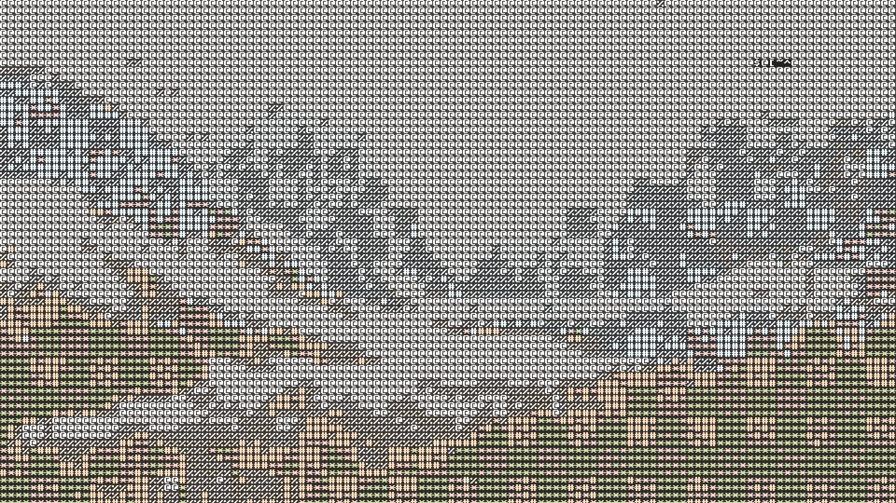
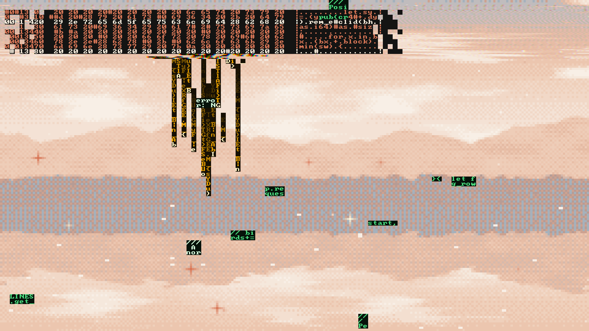

A tour of nynex · for people who know top better than struct
How to paint a landscape thirty times a second
You know your way around a terminal, a registry editor and a PATH. You don't write code. This is how a 5,000-line program turns your holiday photos into a slow, breathing pixel-art scene, explained with tools you already use.
Press → or Space for the next slide, ← to go back.
The shape of it
One file. Four jobs. Like BusyBox.
BusyBox is one binary that acts as ls, cp or sh depending on how you call it. nynex does the same trick with its command line:
$ nynex # the settings app$ nynex --screensaver # full screen; touch anything and it quits$ nynex --wallpaper # behind your windows, on every monitor$ nynex --render a.jpg b.png # draw one frame into a file and exitC:\> nynex.scr /s # what Windows runs when you go idle
No installer, no service, no runtime to install, no graphics card needed. 12 MB on Linux. Copy it anywhere and run it.
The big idea
Don't paint the poster. Paint the thumbnail.
A 1080p screen is 2,073,600 pixels. Doing clever things to each of them 30 times a second would cook your laptop.
So nynex shrinks the photo to a grid of big chunky "cells", about 270 × 152 = 41,000 of them, does all the clever work on that, and only at the very end blows it up to screen size.
Sysadmin versionYou don't grep a 40 GB log every minute. You summarise it once, then query the summary.
270 × 152 = 41,040 cells
The plan
Slow once, fast forever
The work splits into two piles: things that are the same for the whole time a photo is on screen, and things that change every frame.
once · ~50 ms
Load
Decode the JPEG on a side thread.
once
Shrink
Crop to your screen shape, make the grid.
once
Understand
Where's the sky? Is there a lake? Is it night?
once
Pick colours
Choose the 16 that best fit this photo.
every frame · ~3 ms
Animate
Water, clouds, birds, stars, sparkles.
every frame
Stylize
Snap to the 16 colours, add the dither.
every frame
Show
Blow up to screen size, send what changed.
Sysadmin versionIt's a cron job with a long setup script and a very short loop body. Anything you can hoist out of the loop, you do.
Understand, part 1
Finding the sky is MS Paint's bucket tool
Clouds should only drift across the sky, not across a mountain. But the program has no idea what a sky is. So it cheats:
Start at the top row (the sky is usually up there).
Spread to any neighbour that is smooth and a similar colour.
Stop at busy texture: trees, rock, buildings.
Anything fully surrounded by sky (a cloud, the sun) counts as sky too.
That's a flood fill, the same thing the paint bucket does. Press play and watch it spread.
0 cells of sky
Understand, part 2
Finding a lake is diff with a mirror
A still lake reflects what's above it. So for every row that might be the shoreline, nynex compares the rows above it with the rows below it flipped upside down.
If the flipped version matches much better than the unflipped one, that's a reflection, and everything below that row gets ripples and glints.
The unflipped check matters: fog matches itself everywhere, but it doesn't match better flipped.
Understand, part 3
Sixteen colours, elected by the pixels
The stylized look uses a small palette, chosen per photo with k-means:
Nominate 16 colours, spread from dark to light.
Every pixel votes for the nearest one.
Each colour moves to the average of its voters.
Repeat 12 times. Done.
Then, the trick that makes it fast: a lookup table. For all 32,768 possible "rounded" colours, work out the nearest palette entry once, and store the answer. 32 KB.
Sysadmin versionIt's /etc/hosts instead of a DNS query. Every frame asks "which palette colour is this?" for each of the 41,000 cells, and each answer is one memory read.
Stylize
Dither: how 1993 faked more colours
With only a few colours, smooth skies turn into ugly stripes. The fix from the GIF era: before rounding, nudge each pixel up or down by a tiny amount from a fixed 4×4 pattern (a Bayer matrix). The stripes dissolve into a fine cross-hatch your eye blends back together.
4
Same palette, same number of colours. Untick "Dither" to see the stripes come back.
Animate
Every moving thing is a cheap trick
Water: each row below the shoreline slides sideways on two slow sine waves. Deeper rows slide further. That's it. That's the ripple.
Clouds: smooth random "noise" (think of it as a blurry static), thresholded so only the bright blobs become cloud, sliding a little every frame. It wraps around, so it never runs out.
The sun: a soft circle that gets 5% brighter and dimmer over six seconds. Breathing.
Birds: five pixels in a V, flipping between two poses twice a second.
Stars: only on a dark sky, only on sky cells, each twinkling at its own speed.
A detour
Random, but the same every time
Sparkles pop up "at random". But nynex never rolls dice. It takes where and when (x, y, time) and runs them through a hash, the way sha256sum turns a file into gibberish that's always the same gibberish.
Why bother? Because four CPU cores draw four parts of the screen at once. If they shared one dice, they'd queue up for it. With a hash, nobody needs to talk to anybody.
Sysadmin versionConsistent hashing in a load balancer: the same client always lands on the same server, with no shared table to lock.
…
Press the button as often as you like. Change a number to get a different answer.
Show, part 1
Four cores, one frame, xargs -P4
A frame is cut into horizontal strips, and a pool of worker threads takes strips off the pile until the frame is done. It's GNU parallel for pixels.
Why only four workers?
More workers finish each frame a hair sooner but burn more CPU in total, because idle workers spin for a moment hoping for more work before they go to sleep. A screensaver should be cheap, not fast.
And the photo loading?
Decoding a big JPEG takes a tenth of a second or more. That happens on its own short-lived thread while the current picture keeps playing, and the result is handed over through a channel. Think of a named pipe: one side writes the finished scene, the other side picks it up when it's ready.
Show, part 2
Only send what changed. rsync for frames.
If a scene has no water, clouds or birds, the picture is identical every frame except for the sun's glow. So nynex keeps the finished picture, redraws only the glow's rectangle, and tells the window system: "just these rectangles changed".
The window system (Windows' compositor, or Hyprland/Sway on Linux) then copies only those bits to the screen.
Sysadmin versionrsync sends the changed blocks, not the whole file. A test makes sure the shortcut draws exactly the same pixels as the long way round.

Being a good citizen
Sleep between frames. Don't catch up. Stop when hidden.
Sleep: after drawing a frame, the program tells the OS "wake me in 33 ms" and uses zero CPU until then. No busy loops.
Don't catch up: if a frame is late (the machine was busy), nynex doesn't rush to draw the missed ones. It just carries on from now. Your compile job wins.
Hidden means stopped: on Linux the wallpaper only draws when the compositor asks for a frame, which it doesn't when a full-screen window covers it. On Windows it checks for a maximised window on top.
Give memory back: on Linux, glibc's allocator likes to hoard freed memory "in case". After each picture change, nynex tells it to return the spare pages. Together with only keeping transition frames while a transition runs, that roughly halved the memory figure in top.
Numbers
Python prototype vs Rust
nynex began as a Python script (fmscape.py) that rendered videos. Same idea, same look. Here's both drawing a live 1080p slideshow on the same Linux box:
Python prototype
nynex 0.9.2
nynex now
Frame rate
18 fps, flat out
30 fps
30 fps
CPU
a whole core
~5% of a core
~5% of a core
Memory (settled)
88–126 MB
103–132 MB
35–60 MB
Memory (peak)
260 MB
230 MB
~110 MB
Needs
Python, NumPy, Pillow
nothing; one 12 MB file
"Memory" here is what Linux calls RSS. Windows Task Manager's default column (private working set) counts less, so the same program shows a much smaller number there. Method and raw numbers are in BENCHMARKS.md.
When things go wrong
Fail like a well-run server
A broken photo in the list? Skipped, the slideshow moves on. If every photo is broken, you get a message on screen, not a black void.
A config file with a typo? It's kept as config.json.bad before defaults load, so saving can't wipe your list. Like .bak files before an edit.
Silly values like a billion birds or a negative display time? Clamped to sane limits on load.
Config writes go to a temp file, then a rename. A power cut mid-save leaves the old file or the new one, never half of each. Same trick as sed -i.
A crash writes a line to crash.log, because a screensaver has no console to print to.
$ ls ~/.config/nynex-screensaver/
config.json # your settings
config.json.bad # only if one ever failed to parse
landscapes/ # copies of your photos
crash.log # only if something went wrong
wallpaper.log # what the wallpaper attached to
Plumbing
How it becomes your screensaver
Windows: a registry value
A Windows screensaver is just an .exe renamed to .scr. Windows runs whatever is in:
nynex copies itself there, sets that value and the timeout, and you never open the old Screen Saver dialog.
Omarchy: PATH order
Omarchy's idle service runs a command called omarchy-launch-screensaver. The installer puts a script with the same name in /usr/local/bin, which comes before /usr/bin on your PATH. Same trick as shadowing any command.
$ which -a omarchy-launch-screensaver
/usr/local/bin/omarchy-launch-screensaver # nynex
/usr/bin/omarchy-launch-screensaver # original
The easter egg
The program carries its own source code
Turn up "code breaking through" and every so often the picture tears open to show code scrolling past, a hex dump, or a crash log typing itself out.
It's real. When nynex is compiled, a line in the source tells the compiler: "paste the text of these three source files into the program". So the binary contains its own source, and shows it to you. The crash log is fake, but its file names and line numbers point at real places in that source.
Which means the comments written for this tour now appear in your screensaver.

Your turn
Poke at it
# draw one frame of your own photo, 5 seconds in$ nynex --render ~/Pictures/lake.jpg frame.png --seconds 5
# watch what it costs while it runs as a wallpaper$ nynex --wallpaper &
$ top -p $(pgrep -n nynex)
# build it and run the tests yourself (needs Rust: rustup.rs)$ git clone https://github.com/kingof9x/nynex-screensaver
$ cd nynex-screensaver && cargo test
Want to read the code? Start with src/scene.rs: the top of the file has a table of where each step lives, and the comments explain the why, not just the what.